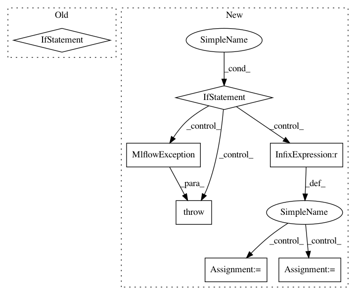

96342cc6b3f9424cd48b746e72d790b883aad958,mlflow/_spark_autologging.py,,autolog,#,150
Before Change
wrap_patch(SparkSession, "__init__", __init__)
active_session = _get_active_spark_session()
if active_session is not None:
// We know SparkContext exists here already, so get it
sc = SparkContext.getOrCreate()
_listen_for_spark_activity(sc)
def _get_repl_id():
Get a unique REPL ID for a PythonSubscriber instance. This is used to distinguish between
REPLs in multitenant, REPL-aware environments where multiple Python processes may share the
After Change
def autolog():
Implementation of Spark datasource autologging
global _spark_table_info_listener
if _get_current_listener() is None:
active_session = _get_active_spark_session()
if active_session is None:
raise MlflowException(
"No active SparkContext found, refusing to enable Spark datasource "
"autologging. Please create a SparkSession e.g. via "
"SparkSession.builder.getOrCreate() (see API docs at "
"https://spark.apache.org/docs/latest/api/python/"
"pyspark.sql.html//pyspark.sql.SparkSession) "
"before attempting to enable autologging"
)
// We know SparkContext exists here already, so get it
sc = SparkContext.getOrCreate()
if _get_spark_major_version(sc) < 3:
raise MlflowException("Spark autologging unsupported for Spark versions < 3")
gw = active_session.sparkContext._gateway
params = gw.callback_server_parameters
callback_server_params = CallbackServerParameters(
address=params.address,
port=params.port,
daemonize=True,
daemonize_connections=True,
eager_load=params.eager_load,
ssl_context=params.ssl_context,
accept_timeout=params.accept_timeout,
read_timeout=params.read_timeout,
auth_token=params.auth_token,
)
gw.start_callback_server(callback_server_params)
event_publisher = _get_jvm_event_publisher()
try:
event_publisher.init(1)
_spark_table_info_listener = PythonSubscriber()
_spark_table_info_listener.register()
except Exception as e:
raise MlflowException(
"Exception while attempting to initialize JVM-side state for "
"Spark datasource autologging. Please ensure you have the "
"mlflow-spark JAR attached to your Spark session as described "
"in http://mlflow.org/docs/latest/tracking.html//"
"automatic-logging-from-spark-experimental. Exception:\n%s" % e
)
// Register context provider for Spark autologging
from mlflow.tracking.context.registry import _run_context_provider_registry
_run_context_provider_registry.register(SparkAutologgingContext)
def _get_repl_id():
Get a unique REPL ID for a PythonSubscriber instance. This is used to distinguish between
REPLs in multitenant, REPL-aware environments where multiple Python processes may share the
In pattern: SUPERPATTERN
Frequency: 3
Non-data size: 7
Instances
Project Name: mlflow/mlflow
Commit Name: 96342cc6b3f9424cd48b746e72d790b883aad958
Time: 2020-10-20
Author: 39497902+dbczumar@users.noreply.github.com
File Name: mlflow/_spark_autologging.py
Class Name:
Method Name: autolog
Project Name: mlflow/mlflow
Commit Name: 9abf61cedb2d84b200eec76d8e036d8c92243e94
Time: 2020-07-13
Author: hkawamura0130@gmail.com
File Name: mlflow/store/model_registry/sqlalchemy_store.py
Class Name: SqlAlchemyStore
Method Name: transition_model_version_stage
Project Name: mlflow/mlflow
Commit Name: 4f9fc9b8698c84f7a7281a2692657a2f1c1368d6
Time: 2020-06-30
Author: 52183359+ankitmathur-db@users.noreply.github.com
File Name: mlflow/utils/search_utils.py
Class Name: SearchUtils
Method Name: _parse_order_by_string